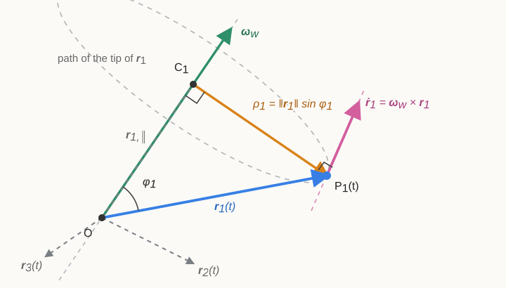

7 Degrees of Freedom and Spatial Motion: \(SO(3)\) and \(SE(3)\)
Why this chapter matters
The preceding chapter described a rigid body constrained to a plane by three pose coordinates and represented its configuration by an element of \(SE(2)\). A robot operating freely in three-dimensional physical space can translate in three independent directions and rotate about three independent directions. This chapter develops the corresponding six-degree-of-freedom model, represents spatial orientation with \(SO(3)\), combines orientation and position with \(SE(3)\), and extends planar angular velocity and twists to three dimensions.
These ideas are required for robot arms, aerial vehicles, underwater vehicles, cameras, lidar sensors, and any system whose orientation cannot be represented by one planar heading angle.
Prerequisites and assumptions
The reader should understand vectors, matrices, rank, and constraints from Chapter 1; coordinate frames, cross products, and three-dimensional point transformations from Chapter 2; and planar rigid transformations, tangent spaces, and twists from Chapter 6.
Physical space is modelled as three-dimensional Euclidean space. Every body considered here is rigid, so the distance between any two body-fixed points remains constant. Frames are right-handed and orthonormal. Position is measured in metres, time in seconds, and angles in radians.
7.1 Degrees of freedom and configuration space
7.1.1 Configuration is a complete geometric description
A system’s configuration is a complete geometric specification of the position of every labelled material point of the system at one instant. A material point is a particular point fixed in the physical material of the body; its identity does not change as the body moves. Configuration describes where the system is, not how fast it is moving or what forces act on it.
This definition can be written as a map. Let \(\mathcal B\) denote the set of labelled material points belonging to one planar rigid body. After attaching frame \(\{b\}\) to the body, each point \(P\in\mathcal B\) has a constant body-frame coordinate \({}^{b}\mathbf p_P\in\mathbb R^2\). A configuration is a placement map \(\chi\) that assigns a world-frame position to every material point:
\[ \chi:\mathcal B\rightarrow\mathbb R^2, \qquad P\longmapsto\chi(P)={}^{w}\mathbf p_P. \]
The symbol \(\chi\) is the Greek lowercase letter chi. Because the body is rigid, a valid placement must preserve the distance between every pair of material points:
\[ \left\|\chi(P)-\chi(Q)\right\|_2 = \left\|{}^{b}\mathbf p_P-{}^{b}\mathbf p_Q\right\|_2 \qquad \text{for every }P,Q\in\mathcal B. \]
The set of all placement maps allowed by the system’s physical constraints is its configuration space, abbreviated C-space and denoted here by \(\mathcal C\). One configuration is therefore one element \(\chi\in\mathcal C\). Calling a configuration a point in C-space means one abstract element of this set; it does not mean one physical point of the rigid body or one point in the world.
Why one transformation represents the whole rigid body
Listing \(\chi(P)\) separately for every \(P\in\mathcal B\) would be highly redundant. All body-frame point coordinates are fixed by rigidity, so a planar rotation \(\mathbf R_{wb}\in SO(2)\) and the world position \({}^{w}\mathbf p_b\in\mathbb R^2\) of the body-frame origin determine every value of the placement map:
\[ \boxed{ \chi(P) = {}^{w}\mathbf p_P = \mathbf R_{wb}{}^{b}\mathbf p_P + {}^{w}\mathbf p_b \qquad \text{for every }P\in\mathcal B }. \]
The homogeneous transformation
\[ \mathbf T_{wb} = \begin{bmatrix} \mathbf R_{wb}&{}^{w}\mathbf p_b\\ \mathbf 0_2^\mathsf T&1 \end{bmatrix} \in SE(2) \]
packages the same rotation and translation. For one selected point \(P\), the multiplication
\[ {}^{w}\overline{\mathbf p}_P = \mathbf T_{wb}{}^{b}\overline{\mathbf p}_P \]
evaluates the placement map only at that point and returns its world-frame homogeneous coordinate. Applying the same \(\mathbf T_{wb}\) to every \(P\in\mathcal B\) produces the world positions of all the body’s material points and therefore specifies the complete configuration. The transformation is not itself the world coordinate of one point; it is the single rule that locates the entire rigid body.
Every configuration uses the same fixed world frame \(\{w\}\). Two configurations \(\chi_1\) and \(\chi_2\) differ when their body-origin positions \({}^{w}\mathbf p_b^{(1)}\) and \({}^{w}\mathbf p_b^{(2)}\) differ, their rotations \(\mathbf R_{wb}^{(1)}\) and \(\mathbf R_{wb}^{(2)}\) differ, or both differ. They are the same configuration only when both the translation and rotation agree, equivalently when \(\mathbf T_{wb}^{(1)}=\mathbf T_{wb}^{(2)}\).
Once the body frame has been fixed relative to the body, each orientation-preserving planar placement determines exactly one \(\mathbf T_{wb}\in SE(2)\), and each \(\mathbf T_{wb}\in SE(2)\) determines exactly one such placement. The two sets are therefore in one-to-one correspondence, written
\[ \boxed{ \mathcal C\cong SE(2) }, \]
where \(\cong\) means that the two sets carry the same configuration information through this correspondence. Robotics texts consequently often identify the configuration space of a free planar rigid body with \(SE(2)\) and write \(\mathcal C=SE(2)\). Here, an element of \(SE(2)\) is being used as a representation of a complete body placement, even though the same matrix can also act as an operator that transforms point coordinates.
Configuration coordinates are not the configuration itself
For the planar rigid body, one convenient coordinate column is
\[ \mathbf q = \begin{bmatrix} x\\y\\\theta \end{bmatrix}, \]
where \(x\) and \(y\) are the entries of \({}^{w}\mathbf p_b=[x\;y]^\mathsf T\) and \(\theta\) is the orientation of frame \(\{b\}\) relative to frame \(\{w\}\). These three generalised coordinates construct the transformation representing the configuration:
\[ \boxed{ \mathbf q \longmapsto \mathbf T_{wb}(\mathbf q) = \begin{bmatrix} \cos\theta&-\sin\theta&x\\ \sin\theta&\cos\theta&y\\ 0&0&1 \end{bmatrix} \in SE(2) }. \]
Thus, \(\chi\) denotes the complete physical placement, \(\mathbf T_{wb}\) represents that placement as a rigid transformation, and \(\mathbf q\) is a coordinate description used to construct the transformation. These objects contain equivalent placement information once the world and body frames, axis directions, units, positive rotation direction, and transformation direction have been defined, but they have different mathematical types. In particular, \(\theta\) and \(\theta+2\pi n\) for any integer \(n\) construct the same rotation, so an unrestricted real-valued angle does not give a unique global coordinate for each configuration.
A configuration space is different from a physical workspace. A workspace is a region of physical space that a robot or end-effector can reach. A C-space contains complete robot configurations. Different joint arrangements can place an end-effector at the same workspace point while representing different points in C-space.
7.1.2 Definition of degree of freedom
A degree of freedom, abbreviated DOF, is one independent local direction in which a configuration can change while continuing to satisfy all configuration constraints. The number of degrees of freedom counts these independent allowable directions.
| System | Independently chosen coordinates | DOF |
|---|---|---|
| Point constrained to a straight rail | Distance \(s\) along the rail | \(1\) |
| Point free in a plane | Position \((x,y)\) | \(2\) |
| Door attached by an ideal hinge | Hinge angle \(\theta\) | \(1\) |
| Free planar rigid body | Position and heading \((x,y,\theta)\) | \(3\) |
| Free spatial rigid body | Three position and three orientation coordinates | \(6\) |
The door illustrates independence. Once its hinge angle is chosen, the positions of all its material points are determined. Recording the world coordinates of its corners would store many scalar values, but the hinge and rigidity constraints prevent those values from being varied independently.
Mathematical definition from allowable small changes
Suppose a candidate configuration is represented by a variable column
\[ \mathbf z = \begin{bmatrix} z_1&\cdots&z_{n_v} \end{bmatrix}^{\mathsf T} \in\mathbb R^{n_v}, \]
where \(n_v\in\mathbb N_0\) is the number of stored scalar variables. Valid configurations must satisfy \(n_c\in\mathbb N_0\) scalar equality constraints collected in the mapping
\[ \mathbf g:\mathbb R^{n_v}\rightarrow\mathbb R^{n_c}, \qquad \mathbf g(\mathbf z)=\mathbf 0_{n_c}. \]
The constraint Jacobian, or constraint-derivative matrix, is \(\mathbf J_{\mathbf g}(\mathbf z)\in\mathbb R^{n_c\times n_v}\) with entry
\[ \left[\mathbf J_{\mathbf g}(\mathbf z)\right]_{ij} \mathrel{:=} \frac{\partial g_i}{\partial z_j}. \]
To describe an allowable local direction at a selected valid configuration \(\mathbf z_0\in\mathbb R^{n_v}\), let \(\mathbf z(s)\) be any differentiable curve of valid configurations, where \(s\in\mathbb R\) is a dimensionless curve parameter, \(\mathbf z(0)=\mathbf z_0\), and \(\mathbf g(\mathbf z(s))=\mathbf 0_{n_c}\) for every \(s\) near zero. Define the curve’s direction at \(\mathbf z_0\) by \(\delta\mathbf z\mathrel{:=}\mathbf z'(0)\in\mathbb R^{n_v}\). Differentiating the constraint equation with respect to \(s\) and applying the multivariable chain rule gives
\[ \boxed{ \left. \frac{d}{ds}\mathbf g(\mathbf z(s)) \right|_{s=0} = \mathbf J_{\mathbf g}(\mathbf z_0)\,\delta\mathbf z = \mathbf 0_{n_c} }. \]
The set of all vectors satisfying this linear equation is the null space of the Jacobian evaluated at \(\mathbf z_0\):
\[ \boxed{ \mathcal N\!\left(\mathbf J_{\mathbf g}(\mathbf z_0)\right) = \left\{ \delta\mathbf z\in\mathbb R^{n_v} \;\middle|\; \mathbf J_{\mathbf g}(\mathbf z_0)\delta\mathbf z = \mathbf 0_{n_c} \right\} }. \]
This is not the same set as the configuration constraint set \(\{\mathbf z\in\mathbb R^{n_v}\mid\mathbf g(\mathbf z)=\mathbf0_{n_c}\}\). The constraint set contains valid configurations and may be curved; the null space contains allowable infinitesimal changes at the one selected configuration \(\mathbf z_0\) and is a linear space.
At a regular configuration, meaning that the rank of the constraint Jacobian remains constant in a neighbourhood of \(\mathbf z_0\), these null-space vectors are exactly the allowable infinitesimal directions. Each independent null-space direction is one independent way to change the configuration locally, so
\[ \boxed{ n_{\mathrm{dof}}(\mathbf z_0) \mathrel{:=} \dim\mathcal N\!\left(\mathbf J_{\mathbf g}(\mathbf z_0)\right) }. \]
Applying the rank-nullity theorem from Section 1.2.2.1 gives
\[ \boxed{ n_{\mathrm{dof}}(\mathbf z_0) = n_v-\operatorname{rank}\!\left(\mathbf J_{\mathbf g}(\mathbf z_0)\right) }. \]
If the \(n_c\) constraints are independent near \(\mathbf z_0\), then \(\operatorname{rank}(\mathbf J_{\mathbf g}(\mathbf z_0))=n_c\), and the familiar counting rule follows:
\[ \boxed{ n_{\mathrm{dof}} = n_v-n_c }. \]
Example: a point constrained to a circle
Consider a point with Cartesian coordinate column \(\mathbf p=[x\;y]^\mathsf T\in\mathbb R^2\) constrained to a circle of fixed radius \(r_c>0\) metres centred at the world origin. Its two stored variables satisfy
\[ g(\mathbf p) \mathrel{:=} x^2+y^2-r_c^2 = 0. \]
Here, \(n_v=2\) and there is one scalar constraint. Its constraint Jacobian is
\[ \mathbf J_g(\mathbf p) = \begin{bmatrix} 2x&2y \end{bmatrix} \in\mathbb R^{1\times2}. \]
An allowable change \(\delta\mathbf p=[\delta x\;\delta y]^\mathsf T\) must satisfy
\[ \begin{bmatrix} 2x&2y \end{bmatrix} \begin{bmatrix} \delta x\\ \delta y \end{bmatrix} = 2x\,\delta x+2y\,\delta y = 0. \]
For this local calculation, \(\mathbf p=[x\;y]^\mathsf T\) is one selected, fixed configuration on the circle. Thus, \(x\) and \(y\) are given constants, while the allowable change \(\delta\mathbf p\) is the variable being determined. Because \(r_c>0\), the selected point is not \(\mathbf0_2\), so the row \(\mathbf J_g(\mathbf p)=[2x\;2y]\) is nonzero and has rank one. The rank-nullity formula therefore gives
\[ \boxed{ n_{\mathrm{dof}} = \dim\mathcal N\!\left(\mathbf J_g(\mathbf p)\right) = 2-1 = 1 }. \]
The equation \(x\,\delta x+y\,\delta y=0\) also shows the actual allowable direction: \(\delta\mathbf p\) must be perpendicular to the fixed radial vector \(\mathbf p\). Every vector perpendicular to \([x\;y]^\mathsf T\) in \(\mathbb R^2\) is a scalar multiple of \([-y\;x]^\mathsf T\), so
\[ \mathcal N\!\left(\mathbf J_g(\mathbf p)\right) = \left\{ \alpha \begin{bmatrix} -y\\x \end{bmatrix} \;\middle|\; \alpha\in\mathbb R \right\}, \]
Here, \(x\) and \(y\) remain fixed and only the dimensionless scalar \(\alpha\in\mathbb R\) varies. Choosing \(\alpha\) determines both components through \(\delta x=-\alpha y\) and \(\delta y=\alpha x\). Substitution confirms that every such change satisfies the linearised constraint:
\[ \mathbf J_g(\mathbf p)\,\delta\mathbf p = \begin{bmatrix} 2x&2y \end{bmatrix} \alpha \begin{bmatrix} -y\\x \end{bmatrix} = \alpha(-2xy+2yx) = 0. \]
The single varying coefficient \(\alpha\) explicitly represents the one local degree of freedom. At a different point on the circle, the fixed values of \(x\) and \(y\) produce a different tangent direction, but the null space still has dimension one.
The number of stored values is consequently not necessarily the number of degrees of freedom. For example, a spatial rotation matrix stores nine scalar entries, but its constraints leave only three independent rotational directions. Likewise, the circle uses two Cartesian entries even though its allowable-change space is one-dimensional.
This counting rule applies directly to geometric, or holonomic, equality constraints that restrict configuration. Constraints imposed only on velocity require separate analysis and do not necessarily reduce the dimension of the configuration space.
7.1.3 Why a free planar rigid body has three degrees of freedom
Select three non-collinear points \(A\), \(B\), and \(C\) fixed to a planar rigid body. Non-collinear means that the points do not all lie on one line, so they form a non-degenerate triangle that visibly represents a two-dimensional rigid shape.
Three points are convenient but not minimal: two distinct labelled points already determine planar position and orientation, whereas one point cannot reveal rotation about itself. The triangle is used here because its fixed pairwise distances make the rigidity constraints especially clear.
If the three points could move independently, their planar coordinates would provide six scalar variables:
\[ (x_A,y_A,x_B,y_B,x_C,y_C) \in \mathbb R^6. \]
Rigidity fixes the three pairwise distances
\[ \left\|\mathbf p_A-\mathbf p_B\right\|_2=d_{AB}, \qquad \left\|\mathbf p_B-\mathbf p_C\right\|_2=d_{BC}, \qquad \left\|\mathbf p_A-\mathbf p_C\right\|_2=d_{AC}, \]
where \(\mathbf p_A,\mathbf p_B,\mathbf p_C\in\mathbb R^2\) are the point-coordinate columns and the positive constants \(d_{AB}\), \(d_{BC}\), and \(d_{AC}\) are the fixed distances measured in metres. For a non-degenerate triangle, these are three independent scalar constraints. Therefore,
\[ n_{\mathrm{dof}} = 6-3 = 3. \]
These three freedoms can be represented more conveniently by two translations and one rotation:
\[ \boxed{ \text{free planar rigid body:} \qquad (x,y,\theta) \qquad \Longrightarrow \qquad 3\ \mathrm{DOF} }. \]
The fixed distances preserve the body’s shape; they do not prevent the complete triangle from translating or rotating as one rigid object.
7.1.4 Why a free spatial rigid body has six degrees of freedom
Allow the same three non-collinear body-fixed points to move in three-dimensional space. Each point has three Cartesian coordinates, so the three points provide nine scalar variables. Rigidity preserves the three pairwise distances \(d_{AB}\), \(d_{BC}\), and \(d_{AC}\), which are three independent constraints for a non-degenerate triangle. Therefore,
\[ n_{\mathrm{dof}} = 9-3 = 6. \]
The six freedoms are interpreted as three translational and three rotational freedoms:
\[ \boxed{ \text{free spatial rigid body:} \quad \underbrace{(x,y,z)}_{3\text{ translations}} \quad+ \underbrace{\text{spatial orientation}}_{3\text{ rotational DOF}} \quad \Longrightarrow \quad 6\ \mathrm{DOF} }. \]
The phrase three rotational degrees of freedom does not yet prescribe three particular angles. Euler angles, rotation vectors, rotation matrices, and unit quaternions are different representations of the same three-dimensional orientation freedom, each with different coordinate properties and limitations. The next learning block develops the rotation-matrix representation \(SO(3)\) before introducing any minimal angle convention.
7.1.5 Constraints, actuators, state variables, and degrees of freedom
Degrees of freedom are often confused with other counts in a robot model. The following quantities answer different questions:
- Configuration DOF: How many independent real coordinates are needed locally to specify where the system is?
- Actuator count: How many independently commanded physical inputs does the system have?
- Instantaneous mobility: How many independent velocity directions are allowed at one configuration?
- State dimension: How many variables are required by a chosen dynamic model to predict future behaviour?
- Representation size: How many numbers are stored by a particular coordinate representation?
These counts need not be equal. A free spatial rigid body has six configuration degrees of freedom. A dynamic state that stores both its pose and velocity may require twelve local scalar coordinates. A rotation matrix stores nine numbers even though spatial orientation has only three degrees of freedom, because its entries satisfy orthonormality and determinant constraints.
A differential-drive robot provides another important distinction. Its configuration is represented by \(\mathbf T_{wb}\in SE(2)\), its configuration space is modelled by \(SE(2)\), and it has three degrees of freedom described locally by \((x,y,\theta)\). Under ideal rolling, however, its instantaneous body velocity has only two independently commanded components, \(v\) and \(\omega\), because sideways velocity is constrained to zero. The robot cannot move sideways instantaneously, but it can change all three pose coordinates through a sequence of forward and turning motions. Therefore, its two instantaneous control directions do not reduce its configuration space to two dimensions.
7.1.6 Worked examples
A hinged door
A free spatial door panel would have six degrees of freedom. An ideal revolute hinge permits only rotation about its hinge axis and prevents the other five independent motions. The constrained door therefore has
\[ n_{\mathrm{dof}} = 6-5 = 1, \]
which can be represented by one hinge angle \(\theta\in\mathbb R\) measured in radians over the mechanically allowed interval.
A free aerial vehicle
Treat the vehicle as one rigid body with no geometric connection to the environment. Its configuration has six degrees of freedom: three position freedoms and three orientation freedoms. This statement does not imply that the vehicle can independently accelerate in all six directions at one instant. Its actuator arrangement and dynamics determine which accelerations can actually be produced.
7.1.7 Assumptions, limitations, and checks
- Counting redundant constraints: Several equations may express the same geometric restriction. Check the rank of the constraint derivatives rather than counting written equations blindly.
- Confusing coordinates with physical freedom: A rotation matrix has nine entries but only three rotational degrees of freedom. Identify the independent constraints imposed on a representation.
- Confusing actuator count with DOF: A robot may be underactuated or may have redundant actuators. State whether a count refers to configuration, velocity, inputs, or state.
- Applying \(n_v-n_c\) at a singular configuration: Constraint rank can change at singularities. Verify that the constraints are regular in the region being analysed.
- Treating a velocity constraint as a configuration constraint: Under ideal rolling, a wheel moves without sliding sideways at its ground contact. This condition is nonholonomic when it restricts the allowable velocities but cannot be replaced by an equivalent equation involving only the configuration. For example, a differential-drive robot cannot move sideways instantaneously, but turning and driving can still change all three coordinates \((x,y,\theta)\). The rolling constraint therefore reduces instantaneous mobility without reducing the dimension of its C-space; analyse valid configurations and valid velocities separately.
Quick test A: configuration and degrees of freedom
- Define configuration and configuration space using the placement map \(\chi\).
- For a planar rigid body, distinguish the placement map \(\chi\), the transformation \(\mathbf T_{wb}\), and the generalised-coordinate column \(\mathbf q\).
- Why does applying \(\mathbf T_{wb}\) to one body-fixed point return only that point’s world coordinate, while the same transformation still represents the body’s complete configuration?
- Express the number of degrees of freedom using the null space and rank of a constraint Jacobian. Apply the definition to a point constrained to a circle.
- Use three non-collinear body-fixed points to explain why a free planar rigid body has three degrees of freedom.
- Why does an ideal hinged door have one degree of freedom rather than six?
- Distinguish configuration DOF, instantaneous mobility, actuator count, and state dimension.
- Why does a differential-drive robot have three configuration degrees of freedom even though its ideal body velocity is specified by only \(v\) and \(\omega\)?
- Under what condition is the counting rule \(n_{\mathrm{dof}}=n_v-n_c\) locally valid?
Answers and hints
- A configuration is a placement map \(\chi\) assigning a world position \(\chi(P)={}^{w}\mathbf p_P\) to every labelled material point \(P\) while satisfying the system’s geometric constraints. The configuration space \(\mathcal C\) is the set of all allowed placement maps.
- The map \(\chi\) is the complete placement of all body points. The matrix \(\mathbf T_{wb}\in SE(2)\) represents that placement through one rotation and translation. The column \(\mathbf q=[x\;y\;\theta]^\mathsf T\) is a set of generalised coordinates used to construct \(\mathbf T_{wb}\).
- Multiplication by one point coordinate evaluates the placement rule at that one point. Because every material point has a fixed body-frame coordinate, applying the same transformation to all such coordinates reconstructs the complete placement map; one transformation therefore represents the whole rigid body.
- At a selected valid configuration \(\mathbf z_0\), allowable small changes satisfy \(\mathbf J_{\mathbf g}(\mathbf z_0)\delta\mathbf z=\mathbf 0_{n_c}\), so \(n_{\mathrm{dof}}(\mathbf z_0)=\dim\mathcal N(\mathbf J_{\mathbf g}(\mathbf z_0))=n_v-\operatorname{rank}(\mathbf J_{\mathbf g}(\mathbf z_0))\). For \(g(x,y)=x^2+y^2-r_c^2\), the Jacobian \([2x\;\;2y]\) has rank one on a circle with \(r_c>0\), and its null space is spanned by \([-y\;x]^\mathsf T\), so \(n_{\mathrm{dof}}=2-1=1\).
- Three planar points provide six scalar coordinates. Rigidity fixes their three pairwise distances, giving three independent constraints for a non-degenerate triangle. Thus, \(6-3=3\) freedoms remain: two translations and one rotation.
- The hinge imposes five independent constraints on a free spatial body and leaves only rotation about the hinge axis, so \(6-5=1\).
- Configuration DOF counts independent pose coordinates; instantaneous mobility counts allowed velocity directions at one configuration; actuator count counts independent command inputs; and state dimension counts the variables retained by a dynamic model.
- Its configuration still requires \((x,y,\theta)\), but the rolling constraint removes instantaneous sideways velocity. Sequences of allowed forward and turning motions can nevertheless change all three configuration coordinates.
- The rule applies locally when the equality constraints are independent and regular, meaning that their derivative has constant rank in the neighbourhood being considered.
7.2 Spatial orientation and \(SO(3)\)
7.2.1 Constructing a spatial rotation matrix
The spatial orientation of body frame \(\{b\}\) relative to world frame \(\{w\}\) specifies how the three body axes point when expressed using world-frame coordinates; the locations of the frame origins are irrelevant to orientation. As established in Chapter 2, let \(\mathbf e_{x,b}\), \(\mathbf e_{y,b}\), and \(\mathbf e_{z,b}\) be the geometric unit vectors along the body axes. Their world-frame coordinate columns are
\[ {}^{w}\mathbf e_{x,b}, \quad {}^{w}\mathbf e_{y,b}, \quad {}^{w}\mathbf e_{z,b} \in\mathbb R^3. \]
Each column is dimensionless because it describes a unit direction. Placing the columns side by side defines
\[ \boxed{ \mathbf R_{wb} \mathrel{:=} \begin{bmatrix} {}^{w}\mathbf e_{x,b}& {}^{w}\mathbf e_{y,b}& {}^{w}\mathbf e_{z,b} \end{bmatrix} \in\mathbb R^{3\times3} }. \]
The first column states where the positive \(x_b\)-axis points in world coordinates, and the other columns do the same for the positive \(y_b\)- and \(z_b\)-axes. The subscript order \(wb\) means that \(\mathbf R_{wb}\) maps coordinate columns from frame \(\{b\}\) to frame \(\{w\}\).
To derive this mapping, let the geometric vector \(\mathbf v\) have body-frame coordinate column
\[ {}^{b}\mathbf v = \begin{bmatrix} v_{x_b}\\ v_{y_b}\\ v_{z_b} \end{bmatrix} \in\mathbb R^3, \]
where the entries are its scalar components along the body axes and carry the physical units of \(\mathbf v\). Expanding the vector in the body basis and then expressing the result in world coordinates gives
\[ \begin{aligned} {}^{w}\mathbf v &= v_{x_b}\,{}^{w}\mathbf e_{x,b} + v_{y_b}\,{}^{w}\mathbf e_{y,b} + v_{z_b}\,{}^{w}\mathbf e_{z,b}\\ &= \begin{bmatrix} {}^{w}\mathbf e_{x,b}& {}^{w}\mathbf e_{y,b}& {}^{w}\mathbf e_{z,b} \end{bmatrix} \begin{bmatrix} v_{x_b}\\ v_{y_b}\\ v_{z_b} \end{bmatrix}. \end{aligned} \]
Therefore,
\[ \boxed{ {}^{w}\mathbf v = \mathbf R_{wb}\,{}^{b}\mathbf v }. \]
This multiplication changes the coordinate description of \(\mathbf v\); it does not change the geometric vector itself.
7.2.2 Rotation constraints and the definition of \(SO(3)\)
Write the columns of \(\mathbf R_{wb}\) as \(\mathbf r_1,\mathbf r_2,\mathbf r_3\in\mathbb R^3\). Because they represent the axes of an orthonormal frame, each column has unit length and each distinct pair is perpendicular:
\[ \mathbf r_i^\mathsf T\mathbf r_i=1, \qquad \mathbf r_i^\mathsf T\mathbf r_j=0 \quad\text{for }i\ne j, \qquad i,j\in\{1,2,3\}. \]
Matrix multiplication collects these pairwise dot products:
\[ \mathbf R_{wb}^\mathsf T\mathbf R_{wb} = \begin{bmatrix} \mathbf r_1^\mathsf T\mathbf r_1& \mathbf r_1^\mathsf T\mathbf r_2& \mathbf r_1^\mathsf T\mathbf r_3\\ \mathbf r_2^\mathsf T\mathbf r_1& \mathbf r_2^\mathsf T\mathbf r_2& \mathbf r_2^\mathsf T\mathbf r_3\\ \mathbf r_3^\mathsf T\mathbf r_1& \mathbf r_3^\mathsf T\mathbf r_2& \mathbf r_3^\mathsf T\mathbf r_3 \end{bmatrix} = \mathbf I_3. \]
A real square matrix satisfying \(\mathbf R^\mathsf T\mathbf R=\mathbf I_3\) is orthogonal. This condition permits both right-handed orientations and reflections. For a right-handed body frame, \(\mathbf r_1\times\mathbf r_2=\mathbf r_3\), so the scalar-triple-product formula gives
\[ \det(\mathbf R_{wb}) = \mathbf r_3^\mathsf T \left( \mathbf r_1\times\mathbf r_2 \right) = \mathbf r_3^\mathsf T\mathbf r_3 = 1. \]
The special orthogonal group in three dimensions, read “S O three,” is
\[ \boxed{ SO(3) \mathrel{:=} \left\{ \mathbf R\in\mathbb R^{3\times3} \;\middle|\; \mathbf R^\mathsf T\mathbf R=\mathbf I_3, \quad \det(\mathbf R)=1 \right\} }. \]
The word orthogonal refers to the orthonormal columns, while special selects determinant \(+1\) and excludes determinant-\(-1\) reflections. The group operation is matrix multiplication. For any \(\mathbf R_1,\mathbf R_2\in SO(3)\),
\[ \begin{aligned} \left(\mathbf R_1\mathbf R_2\right)^\mathsf T \left(\mathbf R_1\mathbf R_2\right) &= \mathbf R_2^\mathsf T \mathbf R_1^\mathsf T \mathbf R_1 \mathbf R_2 = \mathbf I_3,\\ \det\left(\mathbf R_1\mathbf R_2\right) &= \det(\mathbf R_1)\det(\mathbf R_2) = 1. \end{aligned} \]
Thus, \(\mathbf R_1\mathbf R_2\in SO(3)\), which is the closure property. Matrix multiplication is associative, \(\mathbf I_3\) is the identity orientation, and every element has an inverse in the set. From \(\mathbf R^\mathsf T\mathbf R=\mathbf I_3\),
\[ \boxed{ \mathbf R^{-1} = \mathbf R^\mathsf T }. \]
A rotation matrix stores nine scalar entries, but the symmetric equation \(\mathbf R^\mathsf T\mathbf R=\mathbf I_3\) supplies six independent scalar constraints: three unit-length equations and three pairwise-orthogonality equations. The determinant requirement selects the right-handed component rather than removing another continuous direction. Consequently,
\[ \boxed{ \dim SO(3) = 9-6 = 3 }. \]
Here, \(\dim SO(3)=3\) means that three independent continuous coordinates are required near any selected orientation. This is the same local meaning of dimension used in the earlier DOF definition.
7.2.3 Example: a positive quarter-turn about the world \(z_w\)-axis
Suppose frame \(\{b\}\) starts aligned with frame \(\{w\}\) and is rotated through \(\pi/2\,\mathrm{rad}\) about the positive \(z_w\)-axis according to the right-hand rule. Its body axes, expressed in world coordinates, become
\[ {}^{w}\mathbf e_{x,b} = \begin{bmatrix} 0\\1\\0 \end{bmatrix}, \qquad {}^{w}\mathbf e_{y,b} = \begin{bmatrix} -1\\0\\0 \end{bmatrix}, \qquad {}^{w}\mathbf e_{z,b} = \begin{bmatrix} 0\\0\\1 \end{bmatrix}. \]
Placing these axes into the columns gives
\[ \boxed{ \mathbf R_{wb} = \begin{bmatrix} 0&-1&0\\ 1&0&0\\ 0&0&1 \end{bmatrix} \in SO(3) }. \]
Direct calculation gives \(\mathbf R_{wb}^\mathsf T\mathbf R_{wb}=\mathbf I_3\) and \(\det(\mathbf R_{wb})=1\). A vector pointing along the positive body \(x_b\)-axis has \({}^{b}\mathbf v=[1\;0\;0]^\mathsf T\) in arbitrary vector units, so
\[ {}^{w}\mathbf v = \mathbf R_{wb}{}^{b}\mathbf v = \begin{bmatrix} 0\\1\\0 \end{bmatrix}. \]
The result agrees with the first column of \(\mathbf R_{wb}\): the positive body \(x_b\)-axis points along the positive world \(y_w\)-axis.
Quick test B: spatial orientation and \(SO(3)\)
- What does column \(j\) of \(\mathbf R_{wb}\) represent?
- Starting from orthonormal body axes, derive \(\mathbf R_{wb}^\mathsf T\mathbf R_{wb}=\mathbf I_3\).
- Why is \(\det(\mathbf R)=1\) required in addition to \(\mathbf R^\mathsf T\mathbf R=\mathbf I_3\)?
- Why does a rotation matrix store nine entries but represent only three rotational degrees of freedom?
- For the quarter-turn matrix above, calculate \(\mathbf R_{bw}\) and use it to express \({}^{w}\mathbf v=[0\;1\;0]^\mathsf T\) in body coordinates.
Answers and hints
- Columns \(1\), \(2\), and \(3\) are respectively the world-frame coordinate columns of the body \(x_b\)-, \(y_b\)-, and \(z_b\)-axes.
- Entry \((i,j)\) of \(\mathbf R_{wb}^\mathsf T\mathbf R_{wb}\) is \(\mathbf r_i^\mathsf T\mathbf r_j\). It equals \(1\) when \(i=j\) and \(0\) otherwise, producing \(\mathbf I_3\).
- Orthogonality alone permits determinant \(-1\) reflections. The determinant-\(1\) condition selects right-handed rigid-body orientations.
- Orthonormality imposes six independent scalar constraints on the nine entries: three unit-length constraints and three pairwise-orthogonality constraints. Thus, \(9-6=3\) independent continuous values remain.
- \(\mathbf R_{bw}=\mathbf R_{wb}^{-1}=\mathbf R_{wb}^\mathsf T\). Therefore, \({}^{b}\mathbf v=\mathbf R_{bw}{}^{w}\mathbf v=[1\;0\;0]^\mathsf T\).
7.3 Coordinate-axis rotations and composition
7.3.1 Constructing coordinate-axis rotation matrices
Begin with the coordinate-change equation derived in Section 7.2.1:
\[ \boxed{ {}^{w}\mathbf v = \mathbf R_{wb}\,{}^{b}\mathbf v }. \]
Here, \(\mathbf v\) is one unchanged geometric vector, while the two columns are its coordinates in body frame \(\{b\}\) and world frame \(\{w\}\). The same rotation matrix was defined from the world-frame coordinate columns of the body axes:
\[ \boxed{ \mathbf R_{wb} = \begin{bmatrix} {}^{w}\mathbf e_{x,b}& {}^{w}\mathbf e_{y,b}& {}^{w}\mathbf e_{z,b} \end{bmatrix} }. \]
The task is therefore to calculate these three coordinate columns from the geometry and place them into the matrix. Multiplication by standard basis columns is not needed for this construction.
Suppose frames \(\{b\}\) and \(\{w\}\) are initially aligned, and then frame \(\{b\}\) is rotated through \(\theta\in\mathbb R\) radians about the positive world \(x_w\)-axis. A positive rotation follows the right-hand rule. Define
\[ c_\theta\mathrel{:=}\cos\theta, \qquad s_\theta\mathrel{:=}\sin\theta. \]
The \(x_b\)-axis remains aligned with \(x_w\), so its world coordinates are \([1\;0\;0]^\mathsf T\). The \(y_b\)- and \(z_b\)-axes rotate in the world \(y_wz_w\)-plane. Their projections onto the world axes give
\[ \begin{aligned} {}^{w}\mathbf e_{x,b} = \begin{bmatrix} 1\\0\\0 \end{bmatrix}, \quad {}^{w}\mathbf e_{y,b} = \begin{bmatrix} 0\\c_\theta\\s_\theta \end{bmatrix}, \quad {}^{w}\mathbf e_{z,b} = \begin{bmatrix} 0\\-s_\theta\\c_\theta \end{bmatrix}. \end{aligned} \]
By definition, the first, second, and third columns of the orientation matrix are the world-frame coordinates of the \(x_b\)-, \(y_b\)-, and \(z_b\)-axes, respectively. Substituting the three columns above gives
\[ \mathbf R_x(\theta) = \begin{bmatrix} {}^{w}\mathbf e_{x,b}& {}^{w}\mathbf e_{y,b}& {}^{w}\mathbf e_{z,b} \end{bmatrix} = \left[ \begin{array}{c|c|c} 1&0&0\\ 0&c_\theta&-s_\theta\\ 0&s_\theta&c_\theta \end{array} \right]. \]
Reading the array by columns shows the substitution directly: \([1\;0\;0]^\mathsf T\) is column one, \([0\;c_\theta\;s_\theta]^\mathsf T\) is column two, and \([0\;-s_\theta\;c_\theta]^\mathsf T\) is column three. Therefore,
\[ \boxed{ \mathbf R_x(\theta) = \begin{bmatrix} 1&0&0\\ 0&c_\theta&-s_\theta\\ 0&s_\theta&c_\theta \end{bmatrix} }. \]
The column placement can be verified by multiplying \(\mathbf R_x(\theta)\) by each standard basis column:
\[ \begin{aligned} \begin{bmatrix} 1\\0\\0 \end{bmatrix} &= \mathbf R_x(\theta) \begin{bmatrix} 1\\0\\0 \end{bmatrix},\\[4pt] \begin{bmatrix} 0\\c_\theta\\s_\theta \end{bmatrix} &= \mathbf R_x(\theta) \begin{bmatrix} 0\\1\\0 \end{bmatrix},\\[4pt] \begin{bmatrix} 0\\-s_\theta\\c_\theta \end{bmatrix} &= \mathbf R_x(\theta) \begin{bmatrix} 0\\0\\1 \end{bmatrix}. \end{aligned} \]
The three input columns select columns one, two, and three of \(\mathbf R_x(\theta)\), respectively. These products verify the assembled matrix; the preceding geometric projection determined the column values.
For a positive rotation about the world \(y_w\)-axis, the \(y_b\)-axis remains fixed. The right-hand rule sends the positive \(x_b\)-axis toward negative \(z_w\) and the positive \(z_b\)-axis toward positive \(x_w\). Their world-frame coordinate columns are therefore
\[ \begin{aligned} {}^{w}\mathbf e_{x,b} = \begin{bmatrix} c_\theta\\0\\-s_\theta \end{bmatrix},\quad {}^{w}\mathbf e_{y,b} = \begin{bmatrix} 0\\1\\0 \end{bmatrix},\quad {}^{w}\mathbf e_{z,b} = \begin{bmatrix} s_\theta\\0\\c_\theta \end{bmatrix}. \end{aligned} \]
For a positive rotation about the world \(z_w\)-axis, the \(z_b\)-axis remains fixed, the positive \(x_b\)-axis rotates toward positive \(y_w\), and the positive \(y_b\)-axis rotates toward negative \(x_w\). Hence,
\[ \begin{aligned} {}^{w}\mathbf e_{x,b} = \begin{bmatrix} c_\theta\\s_\theta\\0 \end{bmatrix},\quad {}^{w}\mathbf e_{y,b} = \begin{bmatrix} -s_\theta\\c_\theta\\0 \end{bmatrix},\quad {}^{w}\mathbf e_{z,b} = \begin{bmatrix} 0\\0\\1 \end{bmatrix}. \end{aligned} \]
Placing each set of three world-frame body-axis coordinates into the corresponding matrix columns gives
\[ \boxed{ \mathbf R_y(\theta) = \begin{bmatrix} c_\theta&0&s_\theta\\ 0&1&0\\ -s_\theta&0&c_\theta \end{bmatrix}, \qquad \mathbf R_z(\theta) = \begin{bmatrix} c_\theta&-s_\theta&0\\ s_\theta&c_\theta&0\\ 0&0&1 \end{bmatrix} }. \]
Each matrix has right-handed orthonormal columns and therefore belongs to \(SO(3)\).
The active-rotation interpretation
The same numerical matrices can also be used as active rotation operators. An active rotation changes a geometric vector while the frame used to describe it remains fixed. Let \(\mathbf v\) denote the vector before rotation and \(\mathbf v'\) the vector after rotation. Their world-frame coordinate columns satisfy
\[ \boxed{ {}^{w}\mathbf v' = \mathbf R_i(\theta)\,{}^{w}\mathbf v, \qquad i\in\{x,y,z\} }. \]
The prime labels the vector after rotation and does not denote a derivative. The coordinate-change equation describes one geometric vector in two frames; the active-rotation equation describes two geometric vectors in one fixed frame.
7.3.2 Composition order: the rightmost rotation acts first
Let \(\mathbf Q_1,\mathbf Q_2\in SO(3)\) be two active rotation operators whose inputs and outputs are expressed in the same fixed frame. If \(\mathbf Q_1\) acts first and \(\mathbf Q_2\) acts second, then
\[ \mathbf v' = \mathbf Q_1\mathbf v, \qquad \mathbf v'' = \mathbf Q_2\mathbf v' = \mathbf Q_2\mathbf Q_1\mathbf v. \]
Thus, in the product \(\mathbf Q_2\mathbf Q_1\mathbf v\), the rightmost matrix \(\mathbf Q_1\) acts first. This is a consequence of function composition, not a special convention invented for rotations.
Spatial rotations generally do not commute. To demonstrate this, define
\[ \mathbf R_x \mathrel{:=} \mathbf R_x\!\left(\frac{\pi}{2}\right), \qquad \mathbf R_y \mathrel{:=} \mathbf R_y\!\left(\frac{\pi}{2}\right), \qquad \mathbf e_z = \begin{bmatrix} 0\\0\\1 \end{bmatrix}. \]
Rotating first about \(x\) and then about \(y\) gives
\[ \mathbf R_y\mathbf R_x\mathbf e_z = \mathbf R_y \begin{bmatrix} 0\\-1\\0 \end{bmatrix} = \begin{bmatrix} 0\\-1\\0 \end{bmatrix}. \]
Reversing the order gives
\[ \mathbf R_x\mathbf R_y\mathbf e_z = \mathbf R_x \begin{bmatrix} 1\\0\\0 \end{bmatrix} = \begin{bmatrix} 1\\0\\0 \end{bmatrix}. \]
The outputs differ, so
\[ \boxed{ \mathbf R_y\mathbf R_x \ne \mathbf R_x\mathbf R_y }. \]
This calculation assumes that both rotations are active rotations about axes of the same fixed frame. Changing which frame supplies the rotation axes changes the meaning of the sequence.
7.3.3 Fixed-frame and body-frame increments
Consider a rigid body moving while the world frame \(\{w\}\) remains fixed. Before the body turns, its three body-fixed axes point in particular world-frame directions. The body then turns, carrying all its body-fixed points and axes with it, and the axes point in new world-frame directions afterward.
An orientation describes this rotational state at one instant; it answers how the body axes currently point relative to a reference frame. A turn is the physical rotational motion that changes one orientation into another over a time interval. Let frame \(\{b\}\) denote the body axes before the turn and frame \(\{b'\}\) denote the same body axes afterward. Then \(\mathbf R_{wb}\in SO(3)\) is the orientation before the turn, whereas \(\mathbf R_{wb'}\in SO(3)\) is the orientation afterward.
A rotation matrix \(\mathbf Q\in SO(3)\) that describes only the change from the old orientation to the new orientation is called an incremental rotation. The word incremental describes the matrix’s role as an orientation change; \(\mathbf Q\) is still an ordinary rotation matrix, and the turn need not be infinitesimally small. Conceptually,
\[ \boxed{ \text{new orientation} = \text{rotation change} \mathbin{\circ} \text{old orientation} }, \]
where \(\circ\) denotes composition: apply the old orientation first and then apply the rotation change. Matrix multiplication will represent this composition, but the side on which \(\mathbf Q\) multiplies depends on the coordinate frame used to describe the change.
First describe the change using world-frame coordinates and denote it by \(\mathbf Q_w\in SO(3)\). The subscript \(w\) means that \(\mathbf Q_w\) acts on world-coordinate columns. For any direction fixed in the body, if \({}^{w}\mathbf v_{\mathrm{old}}\in\mathbb R^3\) and \({}^{w}\mathbf v_{\mathrm{new}}\in\mathbb R^3\) are its world-coordinate columns before and after the turn, respectively, then the definition of \(\mathbf Q_w\) is
\[ {}^{w}\mathbf v_{\mathrm{new}} = \mathbf Q_w{}^{w}\mathbf v_{\mathrm{old}}. \]
Write the current orientation as
\[ \mathbf R_{wb} = \begin{bmatrix} \mathbf r_1&\mathbf r_2&\mathbf r_3 \end{bmatrix}, \]
where \(\mathbf r_1,\mathbf r_2,\mathbf r_3\in\mathbb R^3\) are the current world-frame coordinate columns of the body \(x_b\)-, \(y_b\)-, and \(z_b\)-axes. Applying \(\mathbf Q_w\) to the physical body rotates each of these three axes, so the updated body-axis columns are
\[ {}^{w}\mathbf e_{x,b'} = \mathbf Q_w\mathbf r_1, \qquad {}^{w}\mathbf e_{y,b'} = \mathbf Q_w\mathbf r_2, \qquad {}^{w}\mathbf e_{z,b'} = \mathbf Q_w\mathbf r_3. \]
The updated orientation matrix is constructed by placing these new body-axis coordinates into its columns:
\[ \begin{aligned} \mathbf R_{wb'} &= \begin{bmatrix} {}^{w}\mathbf e_{x,b'}& {}^{w}\mathbf e_{y,b'}& {}^{w}\mathbf e_{z,b'} \end{bmatrix}\\ &= \begin{bmatrix} \mathbf Q_w\mathbf r_1& \mathbf Q_w\mathbf r_2& \mathbf Q_w\mathbf r_3 \end{bmatrix}\\ &= \mathbf Q_w \begin{bmatrix} \mathbf r_1&\mathbf r_2&\mathbf r_3 \end{bmatrix}\\ &= \boxed{\mathbf Q_w\mathbf R_{wb}}. \end{aligned} \]
Thus, an increment described using world-frame axes premultiplies the current orientation, where premultiply means multiply on the left. This product answers the practical question posed at the start: given the old orientation and an additional world-described rotation, what is the new orientation?
As an alternative, suppose the increment is described relative to the current body axes. Let \(\mathbf Q_b\mathrel{:=}\mathbf R_{bb'}\in SO(3)\) describe the orientation of the new body frame \(\{b'\}\) relative to the old body frame \(\{b\}\). Coordinate-frame composition gives
\[ \boxed{ \mathbf R_{wb'} = \mathbf R_{wb}\mathbf R_{bb'} = \mathbf R_{wb}\mathbf Q_b }. \]
The matrices in this composition have different roles:
- \(\mathbf R_{wb'}\) is the resulting orientation of the body relative to the world frame.
- \(\mathbf R_{wb}\) is the body’s orientation relative to the world frame before the turn.
- \(\mathbf R_{bb'}=\mathbf Q_b\) is the orientation of the new body frame \(\{b'\}\) relative to the old body frame \(\{b\}\); it represents the incremental rotation expressed along the old body axes.
Thus, composing the old world-relative orientation with the body-relative orientation change produces the new world-relative orientation.
The body-frame increment therefore postmultiplies the current orientation, where postmultiply means multiply on the right. These rules can be remembered from their frame labels:
\[ \underbrace{\mathbf R_{wb}}_{b\rightarrow w} \underbrace{\mathbf R_{bb'}}_{b'\rightarrow b} = \underbrace{\mathbf R_{wb'}}_{b'\rightarrow w}. \]
The two update formulas are not interchangeable. Premultiplication applies a rotation about an axis fixed in the world description; postmultiplication applies a rotation about an axis attached to the current body description.
Quick test C: coordinate-axis rotations and composition
- Starting from \({}^{w}\mathbf v=\mathbf R_{wb}{}^{b}\mathbf v\), derive the columns of \(\mathbf R_y(\theta)\) from the body axes expressed in world coordinates.
- In \(\mathbf Q_3\mathbf Q_2\mathbf Q_1\mathbf v\), which rotation acts first?
- Use \(\mathbf e_z\) to show that \(\mathbf R_y(\pi/2)\mathbf R_x(\pi/2)\ne\mathbf R_x(\pi/2)\mathbf R_y(\pi/2)\).
- If an orientation increment is expressed about world-frame axes, on which side of \(\mathbf R_{wb}\) does it multiply?
- If \(\mathbf Q_b=\mathbf R_{bb'}\) is an increment relative to the current body frame, derive the updated orientation \(\mathbf R_{wb'}\) from the frame labels.
- Distinguish an active rotation from a coordinate change.
Answers and hints
- After a positive rotation about \(y_w\), the world-frame body-axis columns are \([c_\theta\;0\;-s_\theta]^\mathsf T\), \([0\;1\;0]^\mathsf T\), and \([s_\theta\;0\;c_\theta]^\mathsf T\). Placing them into the first, second, and third columns gives \(\mathbf R_y(\theta)\).
- \(\mathbf Q_1\) acts first, followed by \(\mathbf Q_2\) and then \(\mathbf Q_3\).
- The first product maps \(\mathbf e_z\) to \(-\mathbf e_y\), while the reversed product maps it to \(\mathbf e_x\); therefore, the operators are unequal.
- It premultiplies: \(\mathbf R_{wb}'=\mathbf Q_w\mathbf R_{wb}\).
- The labels compose as \((b\rightarrow w)(b'\rightarrow b)=(b'\rightarrow w)\), so \(\mathbf R_{wb'}=\mathbf R_{wb}\mathbf R_{bb'}=\mathbf R_{wb}\mathbf Q_b\).
- An active rotation changes a geometric vector while retaining one coordinate frame. A coordinate change keeps the geometric vector fixed and changes the frame used to express its coordinate column.
7.4 Angular velocity as the rate of orientation change
7.4.1 From a finite turn to an instantaneous rate
The preceding section compared the body’s orientation before and after a finite turn. Motion also requires a rate that describes how rapidly that orientation is changing at one instant. Consider a rigid body whose orientation relative to the fixed world frame is the differentiable function \(\mathbf R_{wb}(t)\in SO(3)\), where \(t\) is time measured in seconds.
Over a time interval from \(t\) to \(t+\Delta t\), where \(\Delta t>0\) is measured in seconds, the body undergoes a relative rotation from \(\mathbf R_{wb}(t)\) to \(\mathbf R_{wb}(t+\Delta t)\). Euler’s rotation theorem, used here as a stated geometric result, says that every relative orientation change in \(SO(3)\) can be represented as one rotation through an angle about an axis direction. Accordingly, let \(\mathbf a_w(t,\Delta t)\in\mathbb R^3\) be a unit rotation-axis column and let \(\Delta\theta(t,\Delta t)\in\mathbb R\) be the signed rotation angle measured in radians. The subscript \(w\) states that the axis components are expressed along the world axes, and
\[ \left\|\mathbf a_w(t,\Delta t)\right\|_2=1. \]
The rotation axis in an orientation description specifies only a direction \(\mathbf a_w\). It does not identify a particular line in physical space. To specify a particular line, also choose the world position \(\mathbf q_w\in\mathbb R^3\) of one point on it, measured in metres. The line is then
\[ \mathcal L \mathrel{:=} \left\{ \mathbf q_w+\lambda\mathbf a_w \;\middle|\; \lambda\in\mathbb R \right\} \subset\mathbb R^3, \]
where \(\mathcal L\) denotes the axis line and \(\lambda\) is a scalar distance measured in metres. Because \(\mathbf R_{wb}\) describes orientation only, it contains the axis direction associated with the rotation but not the location of a physical pivot line.
The sign of \(\Delta\theta\) follows the right-hand rule about \(\mathbf a_w\). Replacing \(\mathbf a_w\) by \(-\mathbf a_w\) and \(\Delta\theta\) by \(-\Delta\theta\) describes the same turn, so their product is unchanged.
The vector
\[ \mathbf a_w(t,\Delta t) \frac{\Delta\theta(t,\Delta t)}{\Delta t} \]
describes the rotation-change rate over that interval: its direction gives the rotation axis and its signed magnitude gives the angle change per unit time. Taking the limit as the interval shrinks defines the body’s angular velocity relative to the world frame, expressed in world coordinates:
\[ \boxed{ \boldsymbol\omega_w(t) \mathrel{:=} \lim_{\Delta t\to0^+} \mathbf a_w(t,\Delta t) \frac{\Delta\theta(t,\Delta t)}{\Delta t} \in\mathbb R^3 }. \]
The unit axis \(\mathbf a_w\) is dimensionless, while \(\Delta\theta/\Delta t\) has units of \(\mathrm{rad\,s^{-1}}\). Therefore, \(\boldsymbol\omega_w\) has units of \(\mathrm{rad\,s^{-1}}\). The limit is assumed to exist because \(\mathbf R_{wb}(t)\) is differentiable.
Orientation and angular velocity describe different physical quantities. The matrix \(\mathbf R_{wb}(t)\) is the rotational state at time \(t\), whereas \(\boldsymbol\omega_w(t)\) is the instantaneous rate at which that state is changing. Knowing the orientation at one instant does not determine the angular velocity: a stationary body and a turning body can momentarily have the same orientation but different angular velocities.
To connect angular velocity to the orientation matrix, write its three columns explicitly:
\[ \boxed{ \mathbf R_{wb}(t) = \begin{bmatrix} \mathbf r_1(t)&\mathbf r_2(t)&\mathbf r_3(t) \end{bmatrix} }. \]
For each \(i\in\{1,2,3\}\), the dimensionless column \(\mathbf r_i(t)\in\mathbb R^3\) is the world-coordinate representation of one unit body axis fixed in the rigid body. Thus, \(\|\mathbf r_i(t)\|_2=1\). The geometric construction below selects one column \(\mathbf r_i\); Figure 7.1 illustrates the choice \(i=1\) and draws the other two columns as dashed vectors.
When \(\boldsymbol\omega_w\ne\mathbf 0_3\), define its unit direction by \(\mathbf a_w\mathrel{:=}\boldsymbol\omega_w/\|\boldsymbol\omega_w\|_2\) and let \(\varphi_i\in[0,\pi]\) be the angle between \(\mathbf a_w\) and \(\mathbf r_i\). Decompose the selected column into components parallel and perpendicular to the angular-velocity direction:
\[ \mathbf r_{i,\parallel} \mathrel{:=} (\mathbf a_w^\mathsf T\mathbf r_i)\mathbf a_w, \qquad \mathbf r_{i,\perp} \mathrel{:=} \mathbf r_i-\mathbf r_{i,\parallel}. \]
For the drawing, place the tail of these direction vectors at a common coordinate origin \(O\) and call the tip of \(\mathbf r_i\) point \(P_i\). The point \(P_i\) is a graphical endpoint, not necessarily a material point on the body. Let \(C_i\) be the tip of \(\mathbf r_{i,\parallel}\). The segment from \(C_i\) to \(P_i\) represents \(\mathbf r_{i,\perp}\) and is perpendicular to the angular-velocity direction.

The figure is a two-dimensional projection of three-dimensional geometry. The orange radius vector \(\mathbf r_{1,\perp}\), whose length is \(\rho_1\), is perpendicular to \(\boldsymbol\omega_w\), and \(\dot{\mathbf r}_1\) is perpendicular to \(\mathbf r_{1,\perp}\) in three dimensions. The right-angle marker at \(P_1\) therefore appears skewed in the projection even though it denotes a true three-dimensional right angle.
At the selected instant, the tip \(P_i\) has the same tangent direction as a point moving on a circle centred at \(C_i\). The circle radius is the length of the perpendicular component:
\[ \boxed{ \rho_i = \|\mathbf r_{i,\perp}\|_2 = \|\mathbf r_i\|_2\sin\varphi_i = \sin\varphi_i }. \]
The last equality uses \(\|\mathbf r_i\|_2=1\). Multiplying the radius by the angular speed gives the speed of the tip:
\[ \|\dot{\mathbf r}_i\|_2 = \|\boldsymbol\omega_w\|_2\rho_i = \|\boldsymbol\omega_w\|_2 \|\mathbf r_i\|_2 \sin\varphi_i. \]
This is exactly the magnitude of \(\boldsymbol\omega_w\times\mathbf r_i\), and the cross product’s right-hand-rule direction is the tangent direction shown in the figure. When \(\boldsymbol\omega_w=\mathbf 0_3\), both the cross product and the column’s rate are zero. Therefore, for each of the three columns,
\[ \boxed{ \dot{\mathbf r}_i(t) = \boldsymbol\omega_w(t)\times\mathbf r_i(t), \qquad i\in\{1,2,3\} }. \]
These equations describe how the three columns of the orientation matrix change. To combine them into one equation for \(\dot{\mathbf R}_{wb}\), the cross product can be represented as a matrix multiplication.
7.4.2 Cross-product matrices and the orientation derivative
Let
\[ \mathbf x = \begin{bmatrix} x_1\\x_2\\x_3 \end{bmatrix} \in\mathbb R^3. \]
The cross-product matrix of \(\mathbf x\) is defined by
\[ \boxed{ [\mathbf x]_\times \mathrel{:=} \begin{bmatrix} 0&-x_3&x_2\\ x_3&0&-x_1\\ -x_2&x_1&0 \end{bmatrix} \in\mathbb R^{3\times3} }. \]
The notation \([\,\cdot\,]_\times\) means “form the matrix that performs a cross product with the enclosed vector.” For any \(\mathbf y=[y_1\;y_2\;y_3]^\mathsf T\in\mathbb R^3\), direct multiplication gives
\[ \begin{aligned} \left[\mathbf x\right]_\times \mathbf y &= \begin{bmatrix} -x_3y_2+x_2y_3\\ x_3y_1-x_1y_3\\ -x_2y_1+x_1y_2 \end{bmatrix}\\ &= \boxed{ \mathbf x\times\mathbf y }. \end{aligned} \]
Thus, \([\mathbf x]_\times\) is a linear mapping from an input vector \(\mathbf y\in\mathbb R^3\) to the output vector \(\mathbf x\times\mathbf y\in\mathbb R^3\). Its entries have the same units as the components of \(\mathbf x\).
Transposing the matrix changes the sign of every off-diagonal entry:
\[ [\mathbf x]_\times^\mathsf T = -[\mathbf x]_\times. \]
A square matrix \(\mathbf A\) satisfying \(\mathbf A^\mathsf T=-\mathbf A\) is called skew-symmetric. The set of all real \(3\times3\) skew-symmetric matrices is
\[ \boxed{ \mathfrak{so}(3) \mathrel{:=} \left\{ \mathbf A\in\mathbb R^{3\times3} \;\middle|\; \mathbf A^\mathsf T=-\mathbf A \right\} = \left\{ [\mathbf x]_\times \;\middle|\; \mathbf x\in\mathbb R^3 \right\} }. \]
The second equality follows from the structure imposed by skew symmetry. The diagonal entries must be zero, and each entry below the diagonal must be the negative of the corresponding entry above it. Hence, every \(\mathbf A\in\mathfrak{so}(3)\) is determined by three scalars and can be written uniquely as
\[ \mathbf A = \begin{bmatrix} 0&-x_3&x_2\\ x_3&0&-x_1\\ -x_2&x_1&0 \end{bmatrix} = [\mathbf x]_\times. \]
As in the planar case developed in Section 6.3.3, \(\mathfrak{so}(3)\) is the Lie algebra of \(SO(3)\): it is the vector space of instantaneous rotation directions at the identity rotation \(\mathbf I_3\). A finite rotation matrix belongs to \(SO(3)\), whereas an angular-velocity matrix belongs to \(\mathfrak{so}(3)\) and describes a rate rather than an orientation.
Apply the cross-product matrix to the three column-rate equations from Section 7.4.1:
\[ \begin{aligned} \dot{\mathbf R}_{wb} &= \begin{bmatrix} \dot{\mathbf r}_1&\dot{\mathbf r}_2&\dot{\mathbf r}_3 \end{bmatrix}\\ &= \begin{bmatrix} [\boldsymbol\omega_w]_\times\mathbf r_1& [\boldsymbol\omega_w]_\times\mathbf r_2& [\boldsymbol\omega_w]_\times\mathbf r_3 \end{bmatrix}\\ &= [\boldsymbol\omega_w]_\times \begin{bmatrix} \mathbf r_1&\mathbf r_2&\mathbf r_3 \end{bmatrix}. \end{aligned} \]
Because the final matrix of columns is \(\mathbf R_{wb}\),
\[ \boxed{ \dot{\mathbf R}_{wb} = [\boldsymbol\omega_w]_\times\mathbf R_{wb} }. \]
Here, \(\mathbf R_{wb}\in SO(3)\) is dimensionless, \(\boldsymbol\omega_w\in\mathbb R^3\) has units of \(\mathrm{rad\,s^{-1}}\), and both \([\boldsymbol\omega_w]_\times\) and \(\dot{\mathbf R}_{wb}\) have units of \(\mathrm{s^{-1}}\) because radians are dimensionless in SI. This equation says that the world-coordinate rate of every body-axis column is produced by the same world-expressed angular velocity.
Right-multiplying by \(\mathbf R_{wb}^\mathsf T=\mathbf R_{wb}^{-1}\) isolates the angular-velocity matrix:
\[ \begin{aligned} \dot{\mathbf R}_{wb}\mathbf R_{wb}^\mathsf T &= [\boldsymbol\omega_w]_\times \mathbf R_{wb}\mathbf R_{wb}^\mathsf T\\ &= [\boldsymbol\omega_w]_\times\mathbf I_3. \end{aligned} \]
Therefore,
\[ \boxed{ [\boldsymbol\omega_w]_\times = \dot{\mathbf R}_{wb}\mathbf R_{wb}^\mathsf T }. \]
This formula recovers the angular velocity expressed along the world axes from the orientation and its derivative.
The same physical angular velocity can instead be expressed along the moving body axes. Define
\[ \boxed{ \boldsymbol\omega_b \mathrel{:=} \mathbf R_{wb}^\mathsf T\boldsymbol\omega_w \in\mathbb R^3 }. \]
The subscript \(b\) does not mean that the body rotates relative to itself. It means that the body’s angular velocity relative to the world is resolved into components along \(x_b\), \(y_b\), and \(z_b\).
A proper rotation preserves cross products. Insert the identity \(\mathbf I_3=\mathbf R_{wb}^\mathsf T\mathbf R_{wb}\) before \(\mathbf y\), and then use \((\mathbf R^\mathsf T\mathbf a)\times(\mathbf R^\mathsf T\mathbf b)=\mathbf R^\mathsf T(\mathbf a\times\mathbf b)\) for \(\mathbf R\in SO(3)\). Consequently, for every \(\mathbf y\in\mathbb R^3\),
\[ \begin{aligned} \left[\boldsymbol\omega_b\right]_\times\mathbf y &= (\mathbf R_{wb}^\mathsf T\boldsymbol\omega_w)\times\mathbf y\\ &= (\mathbf R_{wb}^\mathsf T\boldsymbol\omega_w) \times (\mathbf R_{wb}^\mathsf T\mathbf R_{wb}\mathbf y)\\ &= \mathbf R_{wb}^\mathsf T \left( \boldsymbol\omega_w\times(\mathbf R_{wb}\mathbf y) \right)\\ &= \mathbf R_{wb}^\mathsf T [\boldsymbol\omega_w]_\times \mathbf R_{wb}\mathbf y. \end{aligned} \]
Because the two matrix expressions produce the same output for every \(\mathbf y\), their matrices are equal:
\[ [\boldsymbol\omega_b]_\times = \mathbf R_{wb}^\mathsf T [\boldsymbol\omega_w]_\times \mathbf R_{wb}. \]
Substituting \([\boldsymbol\omega_w]_\times=\dot{\mathbf R}_{wb}\mathbf R_{wb}^\mathsf T\) then gives
\[ \begin{aligned} [\boldsymbol\omega_b]_\times &= \mathbf R_{wb}^\mathsf T \dot{\mathbf R}_{wb} \mathbf R_{wb}^\mathsf T \mathbf R_{wb}\\ &= \mathbf R_{wb}^\mathsf T\dot{\mathbf R}_{wb}. \end{aligned} \]
The two coordinate descriptions and the corresponding orientation-rate equations are therefore
\[ \boxed{ \begin{aligned} \left[\boldsymbol\omega_w\right]_\times &= \dot{\mathbf R}_{wb}\mathbf R_{wb}^\mathsf T, & \dot{\mathbf R}_{wb} &= [\boldsymbol\omega_w]_\times\mathbf R_{wb},\\ [\boldsymbol\omega_b]_\times &= \mathbf R_{wb}^\mathsf T\dot{\mathbf R}_{wb}, & \dot{\mathbf R}_{wb} &= \mathbf R_{wb}[\boldsymbol\omega_b]_\times. \end{aligned} }. \]
Connection to finite fixed-frame and body-frame increments
The multiplication sides follow directly from the finite composition rules in Section 7.3.3. To see this, let
\[ \mathbf R \mathrel{:=} \mathbf R_{wb}(t), \qquad \mathbf R^+ \mathrel{:=} \mathbf R_{wb}(t+\Delta t), \]
where \(\mathbf R\) is the orientation at time \(t\), \(\mathbf R^+\) is the orientation after a short interval \(\Delta t>0\), and both matrices belong to \(SO(3)\).
First express the orientation change using the fixed world axes. The finite composition rule is
\[ \mathbf R^+ = \mathbf Q_w\mathbf R, \]
where \(\mathbf Q_w\in SO(3)\) is the incremental rotation expressed using world coordinates. At \(\Delta t=0\), there is no orientation change, so \(\mathbf Q_w(t,0)=\mathbf I_3\). Its derivative with respect to the interval length at zero is the world-expressed angular-velocity matrix \([\boldsymbol\omega_w(t)]_\times\). The first-order Taylor expansion is therefore
\[ \mathbf Q_w = \mathbf I_3 + \Delta t[\boldsymbol\omega_w]_\times + O(\Delta t^2). \]
Substituting this expansion into the finite composition rule gives
\[ \begin{aligned} \mathbf R^+ &= \left( \mathbf I_3 + \Delta t[\boldsymbol\omega_w]_\times + O(\Delta t^2) \right)\mathbf R\\ &= \mathbf R + \Delta t[\boldsymbol\omega_w]_\times\mathbf R + O(\Delta t^2). \end{aligned} \]
Subtract \(\mathbf R\), divide by \(\Delta t\), and take the limit \(\Delta t\to0\):
\[ \boxed{ \dot{\mathbf R}_{wb} = [\boldsymbol\omega_w]_\times\mathbf R_{wb} }. \]
Thus, a rotation change expressed using the fixed world axes premultiplies the finite orientation, and its world-expressed angular-velocity matrix likewise multiplies the orientation on the left.
Now express the same orientation change using the old body axes. The finite composition rule is
\[ \mathbf R^+ = \mathbf R\mathbf Q_b, \]
where \(\mathbf Q_b\in SO(3)\) is the incremental rotation expressed using body coordinates. Similarly, \(\mathbf Q_b(t,0)=\mathbf I_3\), and its derivative with respect to the interval length at zero is \([\boldsymbol\omega_b(t)]_\times\). Its first-order Taylor expansion is
\[ \mathbf Q_b = \mathbf I_3 + \Delta t[\boldsymbol\omega_b]_\times + O(\Delta t^2). \]
Substitution gives
\[ \begin{aligned} \mathbf R^+ &= \mathbf R \left( \mathbf I_3 + \Delta t[\boldsymbol\omega_b]_\times + O(\Delta t^2) \right)\\ &= \mathbf R + \Delta t\mathbf R[\boldsymbol\omega_b]_\times + O(\Delta t^2). \end{aligned} \]
Taking the same difference-quotient limit gives
\[ \boxed{ \dot{\mathbf R}_{wb} = \mathbf R_{wb}[\boldsymbol\omega_b]_\times }. \]
Thus, a rotation change expressed using the moving body axes postmultiplies the finite orientation, and its body-expressed angular-velocity matrix likewise multiplies the orientation on the right. Both equations describe the same physical turn; only the axes used to express that turn differ.
| Coordinates used for the change | Finite composition | Instantaneous orientation rate |
|---|---|---|
| Fixed world axes | \(\mathbf R^+=\mathbf Q_w\mathbf R\) | \(\dot{\mathbf R}=[\boldsymbol\omega_w]_\times\mathbf R\) |
| Moving body axes | \(\mathbf R^+=\mathbf R\mathbf Q_b\) | \(\dot{\mathbf R}=\mathbf R[\boldsymbol\omega_b]_\times\) |
Finally, these rate matrices are necessarily skew-symmetric. Differentiating the rotation constraint \(\mathbf R_{wb}^\mathsf T\mathbf R_{wb}=\mathbf I_3\) gives
\[ \dot{\mathbf R}_{wb}^\mathsf T\mathbf R_{wb} + \mathbf R_{wb}^\mathsf T\dot{\mathbf R}_{wb} = \mathbf 0_{3\times3}. \]
Therefore, \((\mathbf R_{wb}^\mathsf T\dot{\mathbf R}_{wb})^\mathsf T=-\mathbf R_{wb}^\mathsf T\dot{\mathbf R}_{wb}\), confirming that \([\boldsymbol\omega_b]_\times\in\mathfrak{so}(3)\). Differentiating \(\mathbf R_{wb}\mathbf R_{wb}^\mathsf T=\mathbf I_3\) similarly confirms that \([\boldsymbol\omega_w]_\times=\dot{\mathbf R}_{wb}\mathbf R_{wb}^\mathsf T\in\mathfrak{so}(3)\). These products remove the current finite orientation and express its instantaneous change at the identity rotation.
Quick test D: angular velocity
- What physical information is contained in the direction and magnitude of \(\boldsymbol\omega_w\)?
- Why does knowing \(\mathbf R_{wb}(t)\) at one instant not determine \(\boldsymbol\omega_w(t)\)?
- Explain geometrically why a body-axis column satisfies \(\dot{\mathbf r}_i=\boldsymbol\omega_w\times\mathbf r_i\).
- Suppose \(\boldsymbol\omega_w=[0\;0\;2]^\mathsf T\,\mathrm{rad\,s^{-1}}\) and \(\mathbf r_i=[1\;0\;0]^\mathsf T\). Calculate \(\dot{\mathbf r}_i\) and interpret its direction.
- Construct \([\mathbf x]_\times\) for \(\mathbf x=[1\;2\;3]^\mathsf T\) and verify that it is skew-symmetric.
- Starting from \(\dot{\mathbf R}_{wb}=[\boldsymbol\omega_w]_\times\mathbf R_{wb}\), isolate \([\boldsymbol\omega_w]_\times\).
- Do \(\boldsymbol\omega_w\) and \(\boldsymbol\omega_b\) describe different physical turns? Explain their relationship.
- Why is \(\mathbf R_{wb}^\mathsf T\dot{\mathbf R}_{wb}\) skew-symmetric rather than a rotation matrix?
Answers and hints
- Its direction gives the instantaneous rotation axis according to the right-hand rule, and its magnitude gives the angular speed in \(\mathrm{rad\,s^{-1}}\).
- Orientation is a state, whereas angular velocity is its rate of change. Different orientation trajectories can pass through the same \(\mathbf R_{wb}(t)\) with different derivatives.
- The tip of \(\mathbf r_i\) has a tangent velocity about the instantaneous rotation-axis direction. The cross product has that tangent direction and magnitude \(\|\boldsymbol\omega_w\|_2\|\mathbf r_i\|_2\sin\varphi_i\).
- \(\dot{\mathbf r}_i=\boldsymbol\omega_w\times\mathbf r_i=[0\;2\;0]^\mathsf T\,\mathrm{s^{-1}}\). The direction initially points toward positive \(y_w\), as expected for a positive turn about \(z_w\).
- \([\mathbf x]_\times=\begin{bmatrix}0&-3&2\\3&0&-1\\-2&1&0\end{bmatrix}\), and direct transposition gives \([\mathbf x]_\times^\mathsf T=-[\mathbf x]_\times\).
- Right-multiply by \(\mathbf R_{wb}^\mathsf T\) and use \(\mathbf R_{wb}\mathbf R_{wb}^\mathsf T=\mathbf I_3\) to obtain \([\boldsymbol\omega_w]_\times=\dot{\mathbf R}_{wb}\mathbf R_{wb}^\mathsf T\).
- No. They describe the same angular velocity relative to the world but resolve it along different axes: \(\boldsymbol\omega_b=\mathbf R_{wb}^\mathsf T\boldsymbol\omega_w\).
- Differentiating \(\mathbf R_{wb}^\mathsf T\mathbf R_{wb}=\mathbf I_3\) shows that \((\mathbf R_{wb}^\mathsf T\dot{\mathbf R}_{wb})^\mathsf T=-\mathbf R_{wb}^\mathsf T\dot{\mathbf R}_{wb}\). It represents an instantaneous rotation rate in \(\mathfrak{so}(3)\), not a finite orientation in \(SO(3)\).
7.5 Finite rotations from axis–angle coordinates
7.5.1 The problem: converting a rotation rate into a finite turn
The angular-velocity equations in Section 7.4 describe an instantaneous orientation rate. A simulation, estimator, or controller also needs a finite orientation change over a nonzero interval. This section solves the forward problem: given a rotation-axis direction and a signed rotation angle, construct the corresponding matrix in \(SO(3)\).
Let \(\mathbf a_w\in\mathbb R^3\) be a unit vector expressed in world coordinates,
\[ \|\mathbf a_w\|_2=1, \]
and let \(\alpha\in\mathbb R\) be a signed rotation angle measured in radians. The pair \((\mathbf a_w,\alpha)\) is an axis–angle representation of the intended orientation change: \(\mathbf a_w\) gives the positive axis direction, and the sign of \(\alpha\) selects the direction of rotation by the right-hand rule. This orientation-only description specifies an axis direction through the coordinate origin; locating a physical pivot line would additionally require a point, as explained in Section 7.4.1.
The three-component column
\[ \boxed{ \boldsymbol\varphi_w \mathrel{:=} \alpha\mathbf a_w \in\mathbb R^3 } \]
is called the rotation vector, or the exponential coordinates of the rotation. Its direction gives the rotation axis and its norm gives the angle magnitude:
\[ \|\boldsymbol\varphi_w\|_2 = |\alpha|. \]
The vector is dimensionless in SI because radians are dimensionless, although its entries are labelled in radians to preserve their physical meaning. It represents a finite orientation change, not angular velocity; angular velocity has units of \(\mathrm{rad\,s^{-1}}\).
7.5.2 The matrix exponential
To construct the finite rotation, first consider a differentiable world-coordinate vector \(\mathbf p(s)\in\mathbb R^3\) rotating about \(\mathbf a_w\), where \(s\in\mathbb R\) is a dimensionless angle parameter measured in radians. The angular rate with respect to \(s\) has unit magnitude, so the vector-rate equation from Section 7.4.1 becomes
\[ \frac{d\mathbf p}{ds} = \mathbf a_w\times\mathbf p(s) = [\mathbf a_w]_\times\mathbf p(s). \]
The initial condition is \(\mathbf p(0)=\mathbf p_0\), where \(\mathbf p_0\in\mathbb R^3\) is the vector before the turn. The coefficient matrix \([\mathbf a_w]_\times\in\mathfrak{so}(3)\) is constant because the axis is fixed in world coordinates.
For any square matrix \(\mathbf A\in\mathbb R^{n\times n}\), the matrix exponential is defined by the convergent power series
\[ \boxed{ \exp(\mathbf A) \mathrel{:=} \mathbf I_n + \mathbf A + \frac{\mathbf A^2}{2!} + \frac{\mathbf A^3}{3!} + \cdots }. \]
This definition extends the ordinary scalar exponential to square matrices. For a constant matrix \(\mathbf A\), term-by-term differentiation of the series gives
\[ \frac{d}{ds}\exp(s\mathbf A) = \mathbf A\exp(s\mathbf A). \]
Therefore,
\[ \mathbf p(s) = \exp\!\left(s[\mathbf a_w]_\times\right)\mathbf p_0 \]
solves the vector-rate equation because
\[ \begin{aligned} \frac{d\mathbf p}{ds} &= \frac{d}{ds} \left[ \exp\!\left(s[\mathbf a_w]_\times\right) \right] \mathbf p_0\\ &= [\mathbf a_w]_\times \exp\!\left(s[\mathbf a_w]_\times\right) \mathbf p_0\\ &= [\mathbf a_w]_\times\mathbf p(s), \end{aligned} \]
and \(\mathbf p(0)=\exp(\mathbf 0_{3\times3})\mathbf p_0=\mathbf I_3\mathbf p_0=\mathbf p_0\). The cross-product-matrix construction is linear, so \([\boldsymbol\varphi_w]_\times=[\alpha\mathbf a_w]_\times=\alpha[\mathbf a_w]_\times\). Setting \(s=\alpha\) therefore defines the finite rotation
\[ \boxed{ \mathbf Q_w(\mathbf a_w,\alpha) \mathrel{:=} \exp\!\left(\alpha[\mathbf a_w]_\times\right) = \exp\!\left([\boldsymbol\varphi_w]_\times\right) }. \]
The mapping
\[ \exp:\mathfrak{so}(3)\to SO(3) \]
is called the exponential map for rotations. It converts the linear, infinitesimal representation \([\boldsymbol\varphi_w]_\times\in\mathfrak{so}(3)\) into a finite rotation matrix \(\mathbf Q_w\in SO(3)\).
To verify that the result is a rotation matrix, set \(\boldsymbol\Omega\mathrel{:=}[\mathbf a_w]_\times\). Because \(\boldsymbol\Omega^\mathsf T=-\boldsymbol\Omega\), transposing the exponential series gives
\[ \mathbf Q_w^\mathsf T = \exp(-\alpha\boldsymbol\Omega). \]
The two exponent matrices \(-\alpha\boldsymbol\Omega\) and \(\alpha\boldsymbol\Omega\) commute because each is a scalar multiple of the same matrix. Hence,
\[ \mathbf Q_w^\mathsf T\mathbf Q_w = \exp(-\alpha\boldsymbol\Omega) \exp(\alpha\boldsymbol\Omega) = \exp(\mathbf 0_{3\times3}) = \mathbf I_3. \]
Thus, \(\mathbf Q_w\) is orthogonal. At \(\alpha=0\), \(\mathbf Q_w=\mathbf I_3\) and \(\det(\mathbf Q_w)=1\). The determinant varies continuously with \(\alpha\), while an orthogonal matrix can have determinant only \(+1\) or \(-1\), so it cannot change sign without leaving the orthogonal set. Therefore, \(\det(\mathbf Q_w)=1\) for every \(\alpha\), proving \(\mathbf Q_w\in SO(3)\).
7.5.3 Deriving Rodrigues’ rotation formula
The infinite series has a finite closed form because powers of \(\boldsymbol\Omega=[\mathbf a_w]_\times\) repeat in a simple pattern. For every \(\mathbf y\in\mathbb R^3\), the vector triple-product identity gives
\[ \begin{aligned} \boldsymbol\Omega^2\mathbf y &= \mathbf a_w\times(\mathbf a_w\times\mathbf y)\\ &= \mathbf a_w(\mathbf a_w^\mathsf T\mathbf y) - (\mathbf a_w^\mathsf T\mathbf a_w)\mathbf y\\ &= \left( \mathbf a_w\mathbf a_w^\mathsf T - \mathbf I_3 \right)\mathbf y. \end{aligned} \]
The last equality uses \(\mathbf a_w^\mathsf T\mathbf a_w=1\). Because the equation holds for every \(\mathbf y\),
\[ \boxed{ \boldsymbol\Omega^2 = \mathbf a_w\mathbf a_w^\mathsf T - \mathbf I_3 }. \]
Furthermore, \(\boldsymbol\Omega\mathbf a_w=\mathbf a_w\times\mathbf a_w=\mathbf 0_3\), so
\[ \begin{aligned} \boldsymbol\Omega^3 &= \boldsymbol\Omega \left( \mathbf a_w\mathbf a_w^\mathsf T- \mathbf I_3 \right)\\ &= (\boldsymbol\Omega\mathbf a_w)\mathbf a_w^\mathsf T - \boldsymbol\Omega\\ &= -\boldsymbol\Omega. \end{aligned} \]
Consequently, the odd powers alternate between \(\boldsymbol\Omega\) and \(-\boldsymbol\Omega\), while the positive even powers alternate between \(\boldsymbol\Omega^2\) and \(-\boldsymbol\Omega^2\). Expand the matrix exponential and group those two power sequences:
\[ \begin{aligned} \exp(\alpha\boldsymbol\Omega) &= \mathbf I_3 + \alpha\boldsymbol\Omega + \frac{\alpha^2}{2!}\boldsymbol\Omega^2 + \frac{\alpha^3}{3!}\boldsymbol\Omega^3 + \cdots\\ &= \mathbf I_3 + \left( \alpha- \frac{\alpha^3}{3!} + \frac{\alpha^5}{5!} - \cdots \right)\boldsymbol\Omega\\ &\quad+ \left( \frac{\alpha^2}{2!} - \frac{\alpha^4}{4!} + \frac{\alpha^6}{6!} - \cdots \right)\boldsymbol\Omega^2. \end{aligned} \]
The first scalar series is \(\sin\alpha\), and the second is \(1-\cos\alpha\). Therefore,
\[ \boxed{ \mathbf Q_w(\mathbf a_w,\alpha) = \exp\!\left(\alpha[\mathbf a_w]_\times\right) = \mathbf I_3 + \sin\alpha[\mathbf a_w]_\times + (1-\cos\alpha)[\mathbf a_w]_\times^2 }. \]
This closed form is Rodrigues’ rotation formula. Its geometric meaning becomes clear by decomposing any vector \(\mathbf y\in\mathbb R^3\) into a component parallel to the axis and a component perpendicular to it:
\[ \mathbf y_{\parallel} \mathrel{:=} (\mathbf a_w^\mathsf T\mathbf y)\mathbf a_w, \qquad \mathbf y_{\perp} \mathrel{:=} \mathbf y- \mathbf y_{\parallel}. \]
Because \(\boldsymbol\Omega\mathbf y=\mathbf a_w\times\mathbf y_{\perp}\) and \(\boldsymbol\Omega^2\mathbf y=-\mathbf y_{\perp}\), Rodrigues’ formula gives
\[ \boxed{ \mathbf Q_w\mathbf y = \mathbf y_{\parallel} + \cos\alpha\,\mathbf y_{\perp} + \sin\alpha (\mathbf a_w\times\mathbf y_{\perp}) }. \]
The parallel component remains unchanged, while the perpendicular component rotates through angle \(\alpha\) in its plane according to the right-hand rule.
7.5.4 Check: rotation about the world \(z_w\)-axis
Choose
\[ \mathbf a_w = \mathbf e_z = \begin{bmatrix}0\\0\\1\end{bmatrix}, \qquad [\mathbf a_w]_\times = \begin{bmatrix} 0&-1&0\\ 1&0&0\\ 0&0&0 \end{bmatrix}. \]
Squaring the cross-product matrix gives
\[ [\mathbf a_w]_\times^2 = \begin{bmatrix} -1&0&0\\ 0&-1&0\\ 0&0&0 \end{bmatrix}. \]
Substitution into Rodrigues’ formula produces
\[ \begin{aligned} \mathbf Q_w(\mathbf e_z,\alpha) &= \mathbf I_3 + \sin\alpha \begin{bmatrix} 0&-1&0\\ 1&0&0\\ 0&0&0 \end{bmatrix} + (1-\cos\alpha) \begin{bmatrix} -1&0&0\\ 0&-1&0\\ 0&0&0 \end{bmatrix}\\ &= \boxed{ \begin{bmatrix} \cos\alpha&-\sin\alpha&0\\ \sin\alpha&\cos\alpha&0\\ 0&0&1 \end{bmatrix} }. \end{aligned} \]
This is exactly the coordinate-axis rotation \(\mathbf R_z(\alpha)\) derived in Section 7.3.1.
7.5.5 Applying a constant angular velocity over a time interval
Suppose the world-expressed angular velocity \(\boldsymbol\omega_w\in\mathbb R^3\) remains constant during a time interval \(\Delta t>0\). If \(\boldsymbol\omega_w\ne\mathbf 0_3\), define
\[ \mathbf a_w \mathrel{:=} \frac{\boldsymbol\omega_w}{\|\boldsymbol\omega_w\|_2}, \qquad \alpha \mathrel{:=} \|\boldsymbol\omega_w\|_2\Delta t. \]
The rotation vector over the interval is then
\[ \boldsymbol\varphi_w = \alpha\mathbf a_w = \Delta t\,\boldsymbol\omega_w. \]
Because the angular velocity is expressed using the fixed world axes, the finite update premultiplies the current orientation:
\[ \boxed{ \mathbf R_{wb}(t+\Delta t) = \exp\!\left( \Delta t[\boldsymbol\omega_w]_\times \right) \mathbf R_{wb}(t) }. \]
If the constant angular velocity is instead expressed using the body axes, the update postmultiplies:
\[ \boxed{ \mathbf R_{wb}(t+\Delta t) = \mathbf R_{wb}(t) \exp\!\left( \Delta t[\boldsymbol\omega_b]_\times \right) }. \]
When the angular velocity is zero, define the finite increment as \(\mathbf I_3\); the orientation then remains unchanged. These finite updates are exact only when the corresponding world- or body-expressed angular velocity remains constant throughout the interval.
Axis–angle coordinates are not globally unique. The pairs \((\mathbf a_w,\alpha)\) and \((-\mathbf a_w,-\alpha)\) describe the same turn, adding \(2\pi k\) to the angle for any \(k\in\mathbb Z\) produces the same rotation, and when \(\alpha=0\) the axis direction is arbitrary. These facts matter when recovering axis–angle coordinates from a rotation matrix or comparing two numerical orientation representations.
Quick test E: axis–angle coordinates and the exponential map
- What information is stored in the axis–angle pair \((\mathbf a_w,\alpha)\), and how does the rotation vector \(\boldsymbol\varphi_w\) combine it?
- State the matrix-exponential definition and explain why \(\mathbf p(s)=\exp(s[\mathbf a_w]_\times)\mathbf p_0\) solves \(d\mathbf p/ds=[\mathbf a_w]_\times\mathbf p\).
- Use the vector triple-product identity to derive \([\mathbf a_w]_\times^2=\mathbf a_w\mathbf a_w^\mathsf T-\mathbf I_3\) for a unit axis.
- Starting from the matrix-exponential series and \([\mathbf a_w]_\times^3=-[\mathbf a_w]_\times\), derive Rodrigues’ rotation formula.
- Why does Rodrigues’ formula leave the vector component parallel to \(\mathbf a_w\) unchanged?
- A constant angular velocity \(\boldsymbol\omega_w=[0\;0\;2]^\mathsf T\,\mathrm{rad\,s^{-1}}\) acts for \(\Delta t=0.25\,\mathrm s\). Find the axis, angle, rotation vector, and finite orientation increment.
- Why does a world-expressed constant angular velocity premultiply \(\mathbf R_{wb}\), while a body-expressed constant angular velocity postmultiplies it?
- Give two reasons why an axis–angle representation of a rotation is not unique.
Answers and hints
- The unit vector \(\mathbf a_w\) gives the positive axis direction in world coordinates, and \(\alpha\) gives the signed right-hand-rule angle. Their product \(\boldsymbol\varphi_w=\alpha\mathbf a_w\) stores the same information in one three-component column.
- \(\exp(\mathbf A)=\mathbf I+\mathbf A+\mathbf A^2/2!+\cdots\). Differentiating \(\exp(s\mathbf A)\) term by term gives \(\mathbf A\exp(s\mathbf A)\); setting \(\mathbf A=[\mathbf a_w]_\times\) produces the required differential equation and the identity exponential satisfies the initial condition.
- For every \(\mathbf y\), \(\mathbf a_w\times(\mathbf a_w\times\mathbf y)=\mathbf a_w(\mathbf a_w^\mathsf T\mathbf y)-(\mathbf a_w^\mathsf T\mathbf a_w)\mathbf y=(\mathbf a_w\mathbf a_w^\mathsf T-\mathbf I_3)\mathbf y\). Equality for every \(\mathbf y\) proves the matrix identity.
- Replace successive odd powers by alternating \([\mathbf a_w]_\times\) and \(-[\mathbf a_w]_\times\), and successive positive even powers by alternating \([\mathbf a_w]_\times^2\) and \(-[\mathbf a_w]_\times^2\). Their scalar coefficients sum to \(\sin\alpha\) and \(1-\cos\alpha\), respectively.
- The cross product of the axis with a parallel vector is zero, so both \([\mathbf a_w]_\times\mathbf y_{\parallel}\) and \([\mathbf a_w]_\times^2\mathbf y_{\parallel}\) vanish.
- \(\mathbf a_w=[0\;0\;1]^\mathsf T\), \(\alpha=2(0.25)=0.5\,\mathrm{rad}\), and \(\boldsymbol\varphi_w=[0\;0\;0.5]^\mathsf T\,\mathrm{rad}\). The increment is \(\mathbf Q_w=\mathbf R_z(0.5)=\begin{bmatrix}\cos0.5&-\sin0.5&0\\\sin0.5&\cos0.5&0\\0&0&1\end{bmatrix}\).
- A finite increment expressed using world axes acts on the world-coordinate columns and therefore premultiplies. An increment expressed using the old body axes composes after the body-to-world mapping and therefore postmultiplies.
- Examples are \((\mathbf a_w,\alpha)\sim(-\mathbf a_w,-\alpha)\), angles differing by \(2\pi k\) give the same rotation, and the axis is arbitrary for zero rotation.
References
- Kevin M. Lynch and Frank C. Park, Modern Robotics: Mechanics, Planning, and Control, Chapter 2 for configuration space and degrees of freedom, and Chapter 3, especially Sections 3.2.1-3.2.3 on spatial rotation matrices, angular velocity, exponential coordinates, and Rodrigues’ formula.
- John J. Craig, Introduction to Robotics: Mechanics and Control, 4th ed., Chapters 1-2, especially degrees of freedom, body-attached frames, proper orthonormal rotation matrices, spatial orientation, and the equivalent angle–axis representation.
- Peter Corke, Robotics, Vision and Control: Fundamental Algorithms in Python, 3rd ed., Chapters 2-3, especially rotation matrices, the matrix exponential, Rodrigues’ formula, rotational velocity, and body- and world-frame expressions of spatial motion.